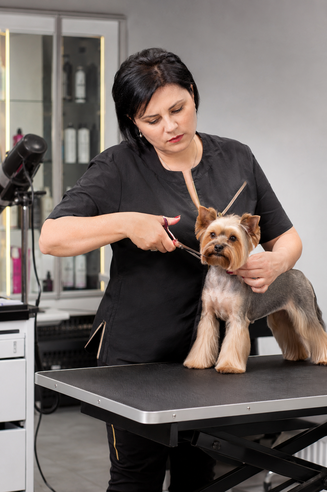
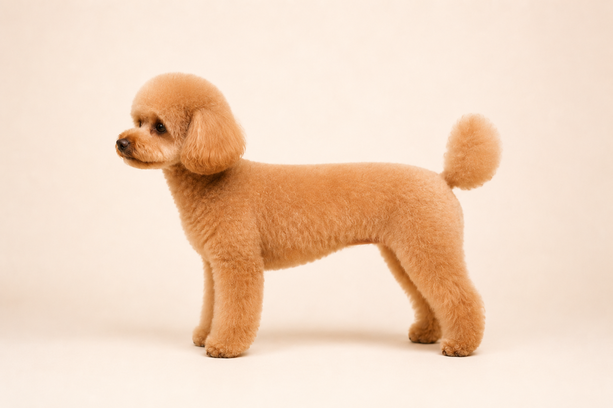
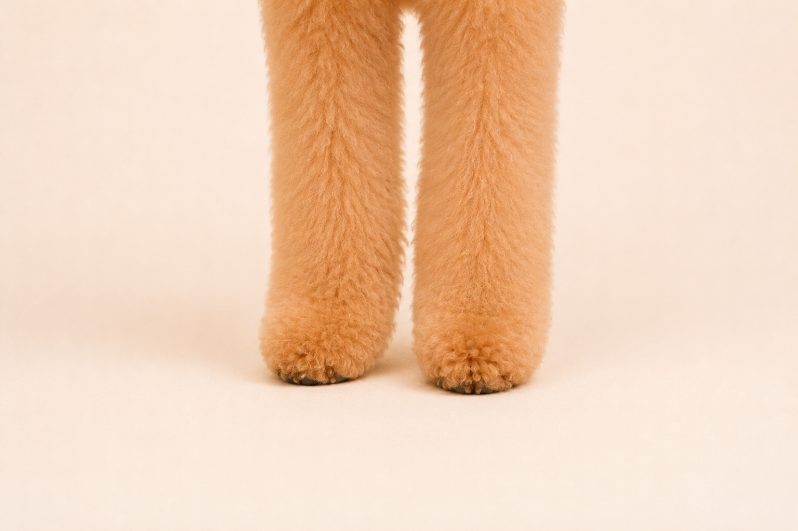
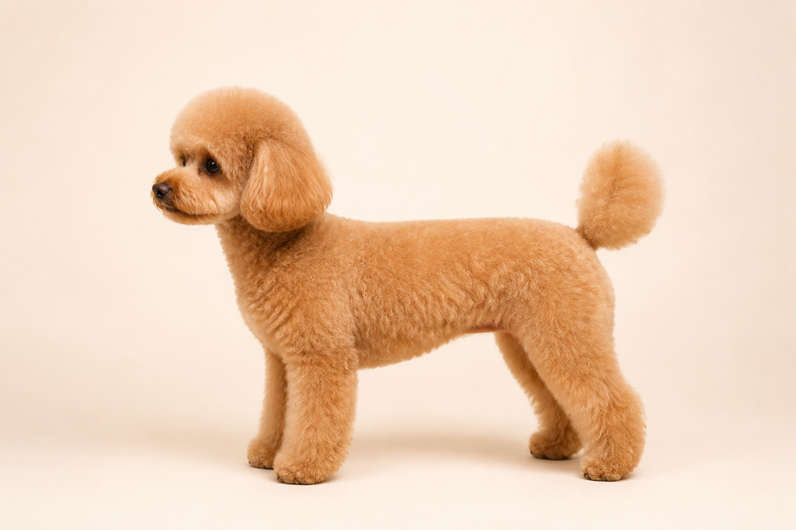
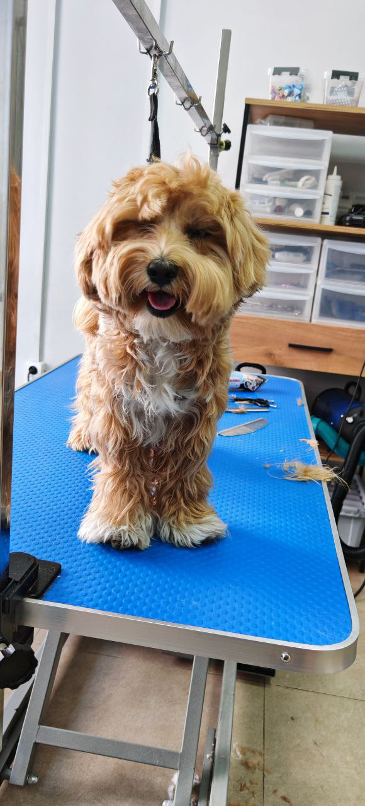
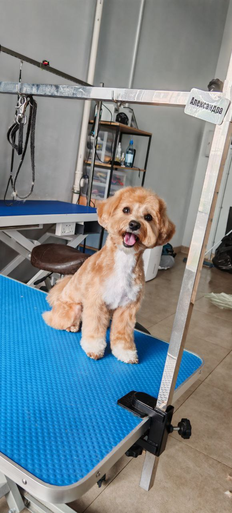
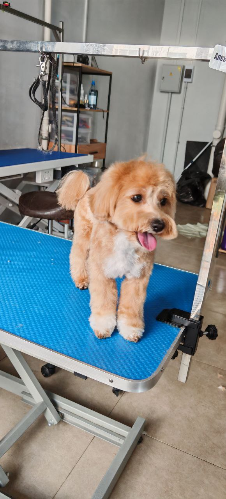
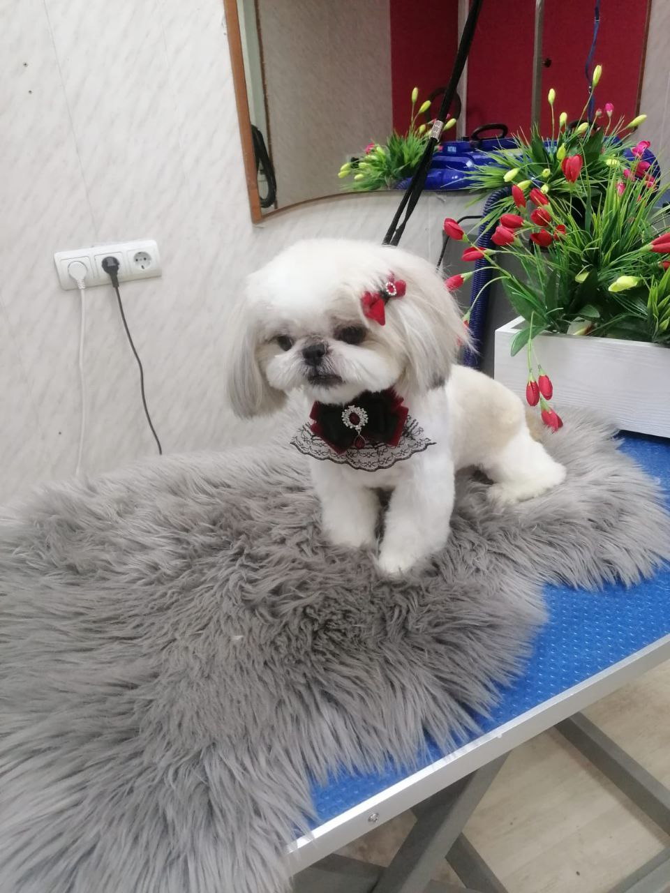
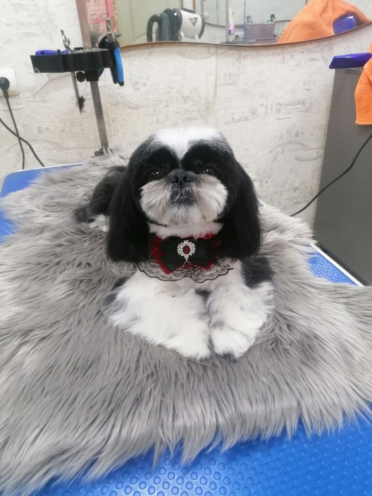
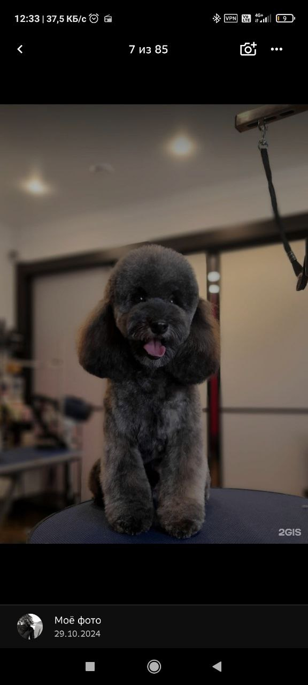

Декоративные породы
Знаю особенности шерсти и формы у декоративных пород.

Александра Лысенко Стрижка, которая подходит именно вашей собакеКрасноярск · груминг по записи
Привет, я Александра Лысенко. Я мастер-грумер с 20-летним опытом работы. Подбираю стрижку под конкретную собаку: по шерсти, породе, характеру и вашему запросу. Я проявляю к питомцу уважение и заботу, а результат делаю чистым, аккуратным и стойким. Работаю быстро и на совесть, без стресса и суеты, чтобы собака чувствовала себя в безопасности и доверяла мне.
Знаю особенности шерсти и формы у декоративных пород.
Сначала обсуждаю результат, потом начинаю работу.
Умею работать с тревожными собаками спокойно и мягко.
Подбираю форму так, чтобы собаке было удобно и красиво.
Делаю стрижку быстро, аккуратно и без суеты.
Стараюсь, чтобы результат держался долго.
Для меня важно не только красиво постричь, но и сохранить спокойствие собаки. Я работаю бережно, без резких движений и лишнего давления. Если питомец волнуется, я не тороплюсь и даю ему время привыкнуть.
Спокойный темп и мягкий контакт.
Аккуратный инструмент и порядок на рабочем месте.
Уход с учётом особенностей шерсти и кожи.
Я понимаю, что перед первым визитом у хозяина может быть тревога.
Записаться на приём →Перед началом я смотрю фото, задаю нужные вопросы и согласовываю образ. Так заранее понятно, что именно получится после стрижки.

корпус
лапки
длинаТак проще сохранить доверие, форму и спокойствие перед процедурой.
Здесь видно, как я работаю с разными собаками и разной шерстью. Без лишних фильтров и обещаний — только живые результаты.






«Собака спокойно перенесла стрижку.»
Клиент Александры«Мастер внимательно отнеслась к питомцу.»
Клиент Александры«Результат получился аккуратным и красивым.»
Клиент АлександрыТочный расчёт — по фото. Во все форматы входит базовый уход, аккуратная обработка, согласованный результат и рекомендации после процедуры.
Для аккуратного образа.
Расчёт по фотоБольше работы с формой.
Расчёт по фотоСложный уход и больше времени.
Расчёт по фотоРазберём ситуацию и подберём щадящий вариант.
Да, фото помогает точнее понять желаемый образ.
Работаю спокойно, без лишнего стресса.
Время зависит от объёма работы и состояния шерсти.
От породы, шерсти и задачи.
Это простой первый шаг без давления: ты понимаешь, что можно сделать, сколько это займёт и какой результат подойдёт именно вашей собаке.